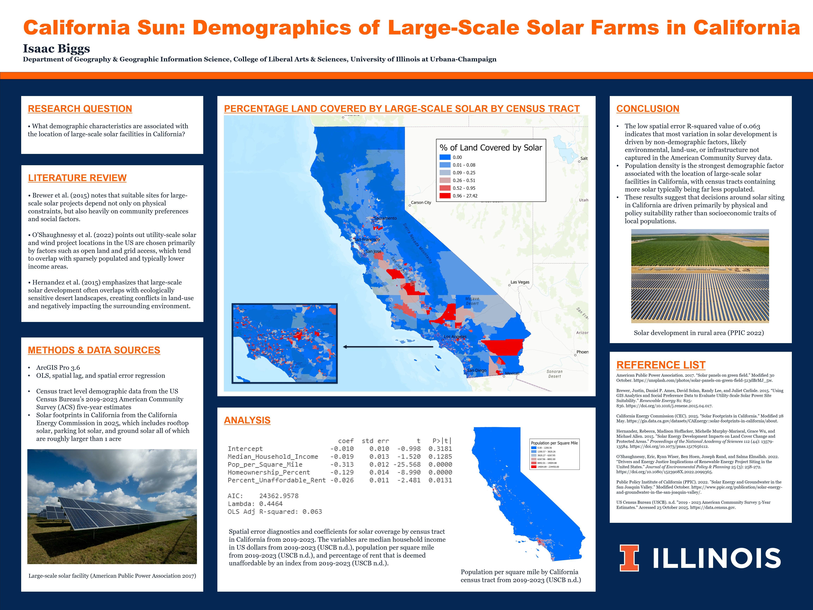
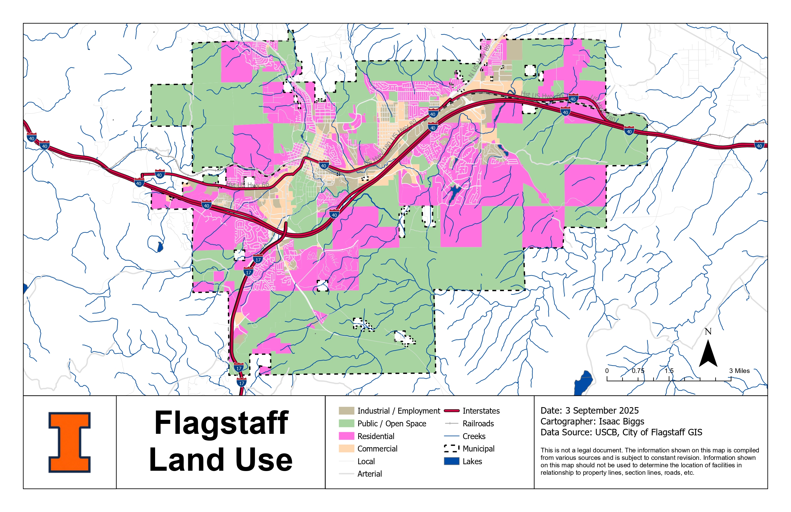
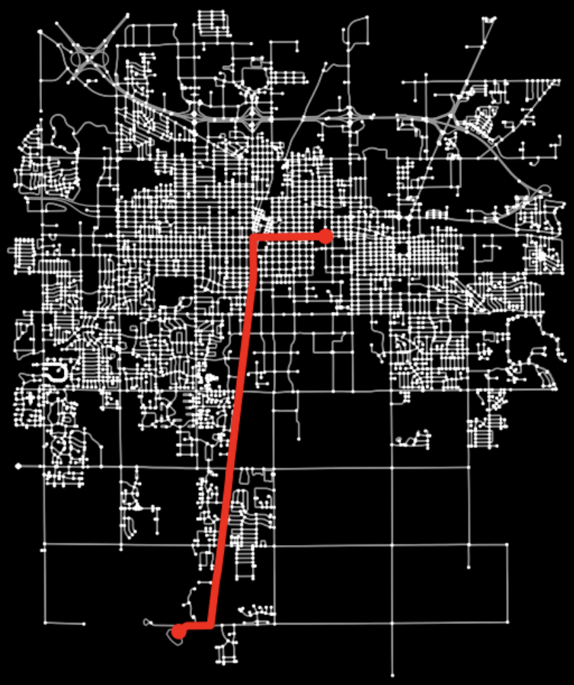
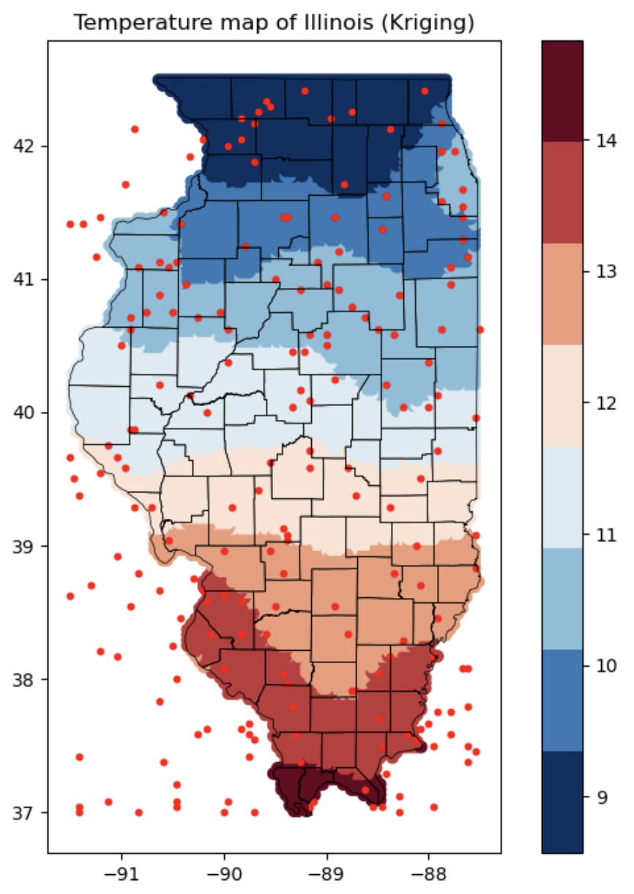
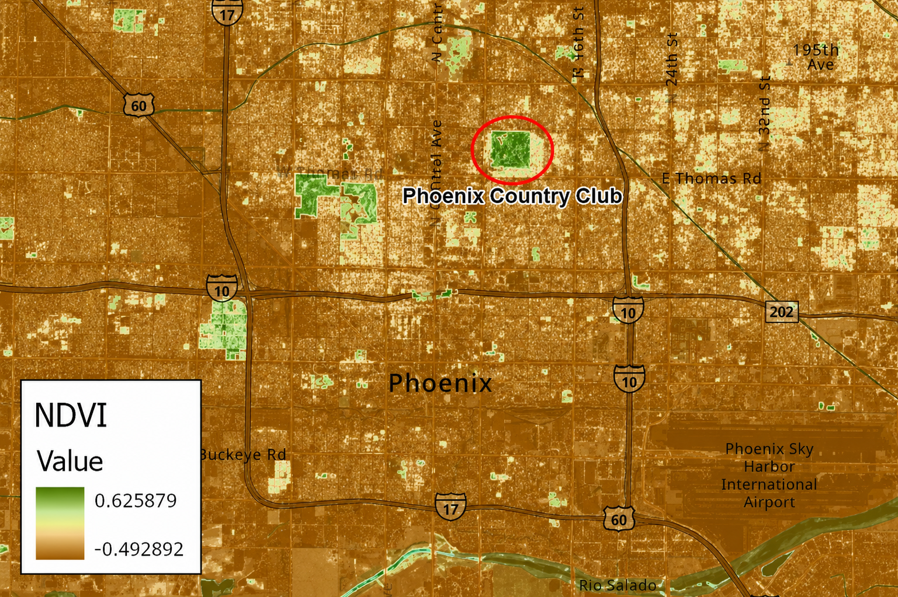
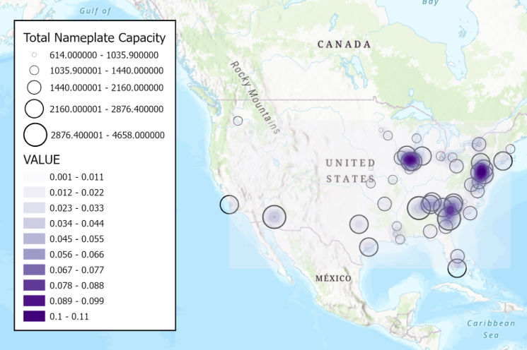
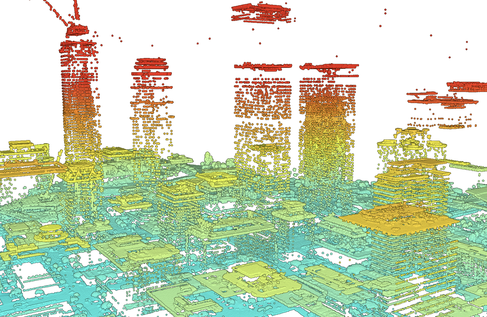
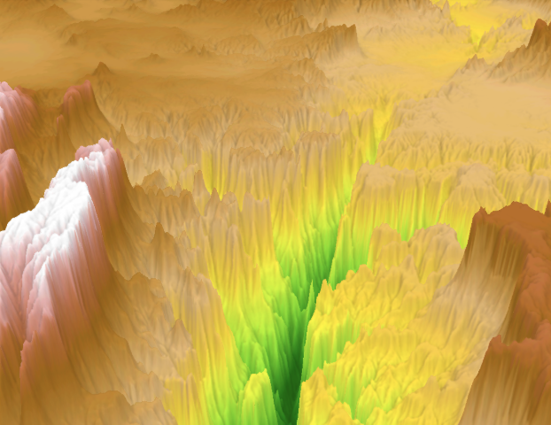

Geospatial Software Engineer, Developer, and Analyst
Building software that works with maps and spatial data.
I'm a rising junior at UIUC studying Computer Science and Geography & GIS with a minor in Data Science. I work at the intersection of code and spatial analysis, writing code that turns raw geospatial data into actionable insights and decision-making tools.
Right now I'm interning at APTech, where I build ArcGIS Pro script tools with Python and ArcPy that automate GIS workflows, cutting processing time from weeks to minutes. On campus I'm the Chapter President of Phi Sigma Kappa, a CS Course Assistant, and a Grainger Engineering Career Services Peer.
I'm looking for Summer 2027 internships and always happy to connect with people working in software, GIS, and spatial data. Feel free to reach out.
Built an interactive Flask + React dashboard analyzing 100K+ Chicago crime reports alongside demographic datasets, letting users query by location, time, and crime type to surface neighborhood-level risk exposure. Cut data processing time 70% via optimized Pandas indexing and vectorized querying, enabling real-time visualization across 15+ datasets that gave non-technical users data-driven insight into community safety trends.
Optimized placement of 10 housing projects across Cook County by integrating 216,000+ property sales records with Census data to identify gentrification-vulnerable neighborhoods, using Python and PuLP for P-median linear programming. Implemented K-Means clustering to aggregate 836 neighborhoods into 200 demand zones, reducing computational complexity while achieving optimal facility placement that minimizes weighted distance to high-risk populations.
Built a geospatial ML pipeline (XGBoost, scikit-learn) on Chicago Transit Authority GTFS data with SQLite persistence, engineering weather and spatial features to generate 13,800+ delay predictions across 144 stops. Deployed an interactive MapLibre GL JS web map visualizing those predictions by month and time of day.
Automated high-volume text communications for my fraternity by developing a Python script that parses CSV data to personalize SMS notifications via macOS integrated automation tools, saving 40+ hours of manual texts over 4 weeks. Optimized delivery reliability to 99% by implementing input validation for phone numbers and CSV formatting, preventing script termination and guaranteeing consistent message dispatch in large contact lists.
Developed PyTorch-based preprocessing pipeline for disaster damage dataset (45K+ images), implementing vector-to-raster conversion with Shapely/Rasterio and intelligent tiling with overlap. Architected dual-task PyTorch Dataset supporting semantic segmentation and change detection with joint augmentation, comprehensive testing (23 unit tests), and configuration-driven workflows.
A collection of geospatial analysis and cartography projects. Click any map to view full details.








Lead chapter of 100+ undergraduate members to promote brotherhood, scholarship, and character. Serve as the main liaison between the chapter, alumni board, national headquarters, other Greek organizations, and UIUC Fraternity and Sorority Affairs to facilitate the health and success of our chapter. Manage a $450,000 yearly budget while guiding financial strategy, transparency, and long-term sustainability.
Member of the international geography honors society, recognizing academic excellence in geographic and geospatial sciences.
Guide engineering students through career development, providing resume reviews, interview preparation, and professional networking advice to help students secure internships and full-time positions.
Under my leadership, our chapter won Phi Sigma Kappa's Herbert L. Brown Outstanding Chapter of the Year award out of 70+ chapters nationwide, recognizing excellence in scholarship, leadership, and chapter operations.
Recognized for academic excellence with a 4.0 GPA in Fall 2024 and Spring 2026.
Competitive merit-based scholarship awarded to Geography & GIS undergraduate majors demonstrating outstanding academic achievement. Endowed by Professor Howard Roepke, a Geography faculty member from 1955-1985.
Completed professional training course covering geospatial analysis techniques for climate change modeling, environmental impact assessment, and sustainable resource management using ArcGIS tools.
Interested in Summer 2027 internships in software engineering, data science, and GIS. Always happy to talk!
isaacbiggs24@gmail.com